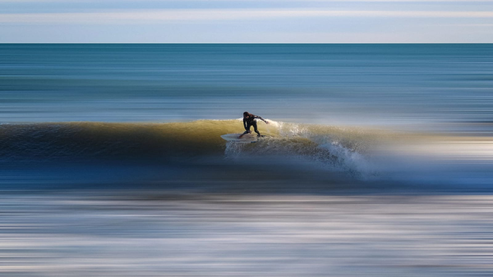
Дневни екскурзии от София · Незабравими преживявания
Открий
хоризонтите
около теб
Дневни екскурзии с водач от София — древна история, планински пътеки и балкански столици, на удобно разстояние с кола.
9 екскурзии с водач
от София
Търси по дестинация, или филтрирай по тема, за да намериш точно това, което търсиш.
9 от 9 екскурзии
Няма съвпадения — пробвай друго търсене или филтър.
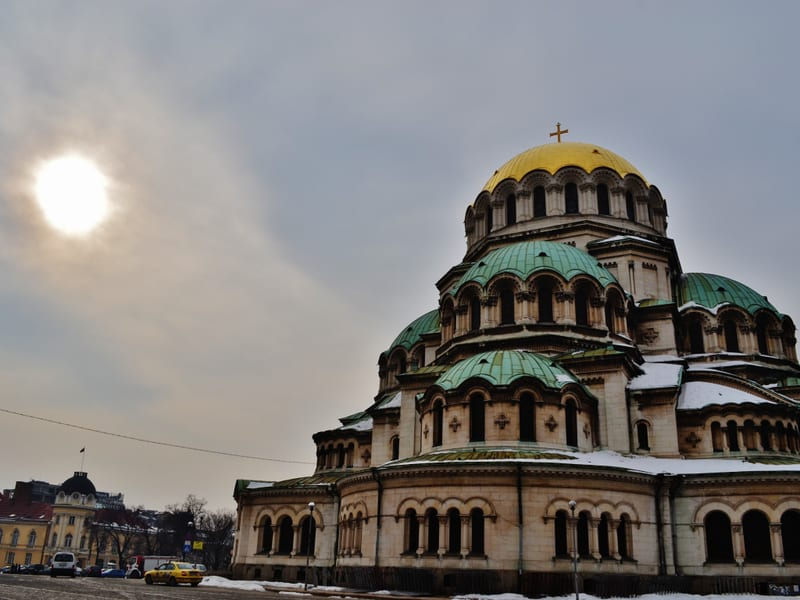
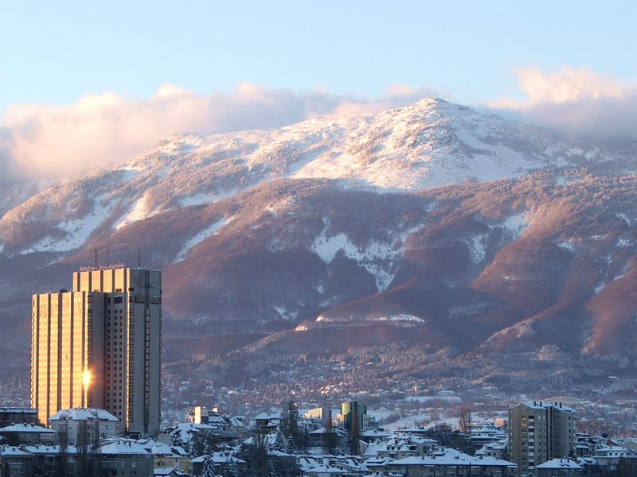
Столицата — от римска Сердика до днес
Макар да е млада като столица, София носи пластове история от векове. Тази целодневна обиколка свързва римски руини, парк от епохата на Студената война и два от най-добрите музеи на града, с водач, който разчита всеки пласт по пътя.
Започваме с изкачване с кола до планината Витоша и старата лифт станция за панорамна гледка над града, след което посещаваме парк „Камбаните“, издигнат през 1979 г. в памет на мира. Оттам продължаваме към Националния исторически музей, останките на римска Сердика, църквата „Света София“, ротондата „Свети Георги“ и катедралата „Александър Невски“ със златните си куполи — символът на града.
Резервирай място →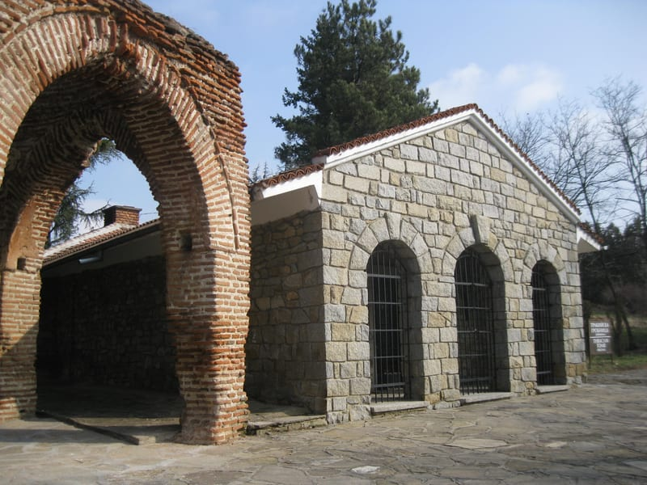

Гробници на изчезнала царска династия
Много преди Рим, тази долина е била свещено погребално място на тракийските царе — същите хора зад мита за Орфей и гладиатора Спартак. Позната днес като Долината на розите, тя крие около 1300 надгробни могили, от които около 300 са разкопани.
Посещаваме пет от най-добрите примери за тракийска погребална архитектура, включително гробницата в Казанлък (ЮНЕСКО) с изключително запазените си фрески от 4-ти век пр.н.е., тройната гробница на цар Севт III в могила Голяма Косматка и уникално декорирания таван на гробницата Оструша — завършваме с посещение на Историческия музей в Казанлък.
Резервирай място →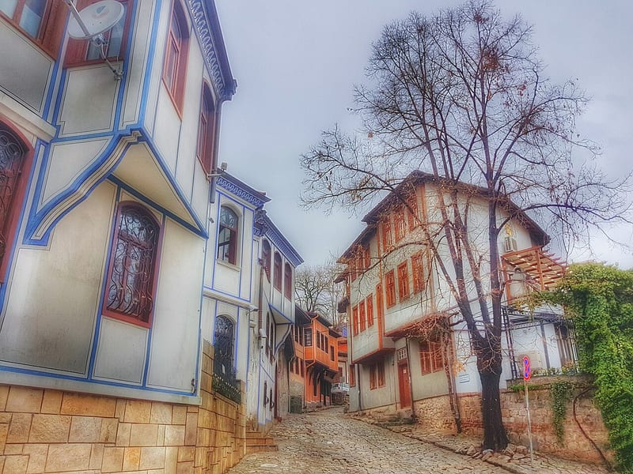

Най-старият град на България, павирана улица по улица
Един от най-старите непрекъснато населявани градове в Европа, Пловдив възнаграждава бавната разходка. Вашият водач ви превежда през пастелните възрожденски къщи на Стария град и неговите малки музеи, преди следобедът да премине в спокойния ритъм на Капана — артистичния и крафт бирен квартал на града.
В завършек посещаваме най-старата действаща пивоварна в България, основана през 1881 г., с обиколка на микропивоварната в оригиналните производствени помещения, дегустация на най-добрите им бири и истински обяд на място.
Резервирай място →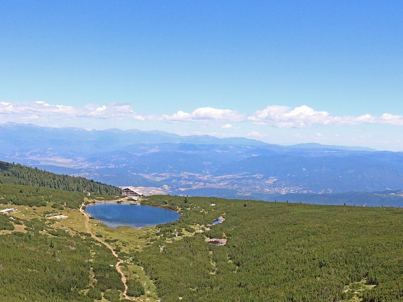

Алпийски езера под връх Вихрен
Пирин е един от природните паркове на България в списъка на ЮНЕСКО, а това е най-лесният начин да го видите за един ден. От хижа Вихрен, умерен 3,5-часов преход в двете посоки ви превежда покрай няколко от ледниковите Бъндеришки езера, с най-високия връх на планината — Вихрен — видим през целия път.
Слизаме до Банско, най-големия ски курорт в България, за традиционен обяд и кратка разходка с водач из историческата част, където възрожденската архитектура от 18-ти век разказва историята на града отпреди ски лифтовете.
Резервирай място →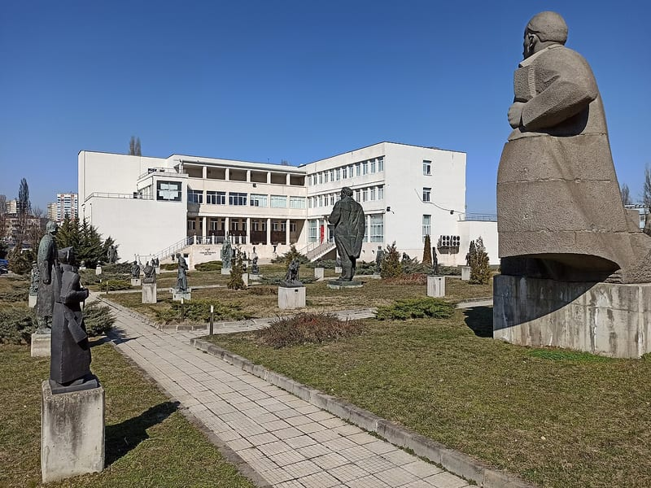
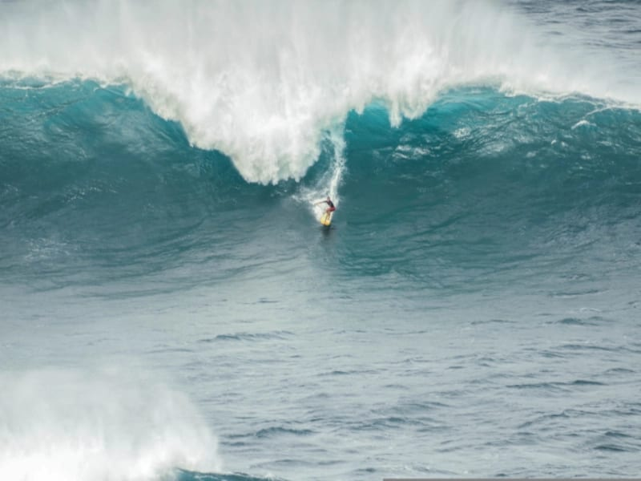
Летяща чиния на комунистически връх
Малко сгради където и да било улавят амбицията и краха на една политическа епоха като Бузлуджа. Построен през 1981 г. от Българската армия в памет на социализма, паметникът остава изоставен след 1989 г. и се превръща в една от най-сниманите руини на Балканите.
Започваме в София с Музея на социалистическото изкуство — парк-скулптура от 7500 кв.м с над 70 монументални творби, включително петолъчната звезда, която някога е увенчавала бившия Партиен дом в София. Оттам ни очаква живописно тричасово пътуване до самата Бузлуджа, където бетонната „чиния“ все още краси върха на планината.
Резервирай място →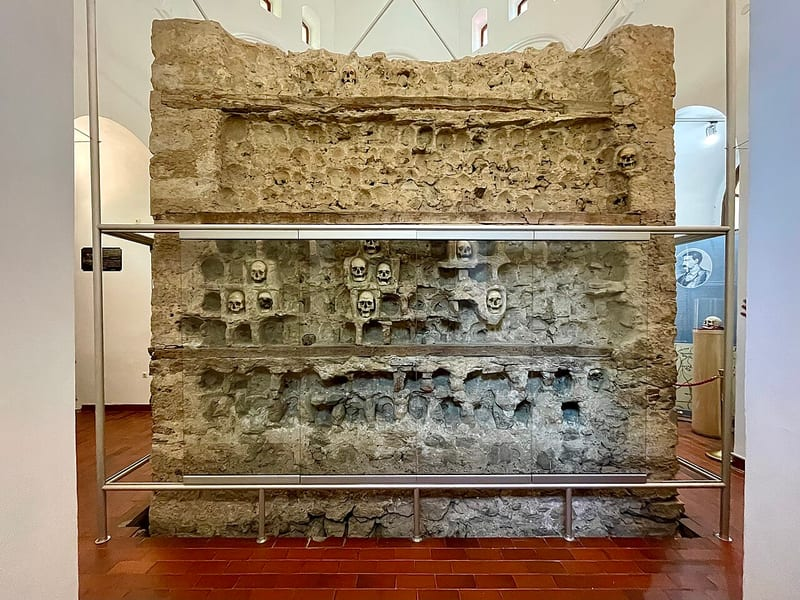
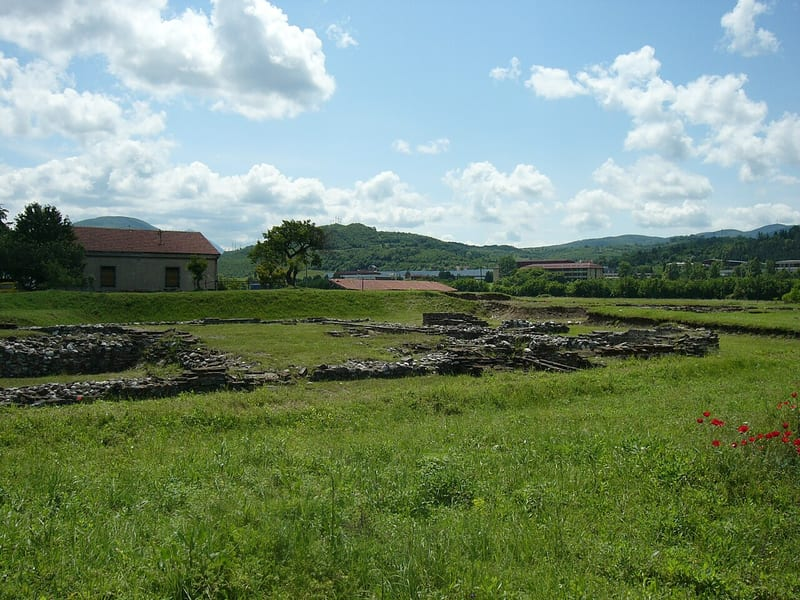
Рим, империя и съпротива, отвъд границата
Ниш дава на света Константин Велики, а пластовата му история преминава през римската епоха, османското владичество и 20-ти век. Започваме в Медиана, римски археологически парк, след което посещаваме Кулата на черепите — смразяващ паметник, издигнат от османците от черепите на сръбски и български бунтовници.
Нацисткият концентрационен лагер, забележително запазен и място на успешен побег през 1942 г., пренася историята към 20-ти век, преди да завършим с крепостта на Ниш и спокоен обяд с традиционна сръбска кухня в стария град.
Резервирай място →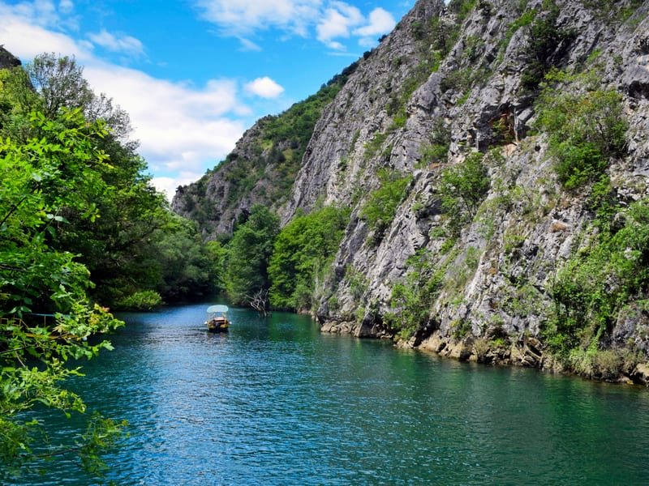

Две столици история, един каньон спокойствие
Столицата на Северна Македония е пример за контрасти — автентичният османски Стар базар стои срещу реката от неокласическия нов център, изграден по проекта „Скопие 2014“. Местен македонски гид се присъединява към нас за два часа, за да сподели перспектива, различна от нашата.
Минаваме през Старата крепост, джамията „Султан Мурат“ от 15-ти век, и пресичаме многовековния Камен мост, преди да стигнем площад „Македония“ и триумфалната арка „Порта Македония“. Следобед сменяме историята с природа в каньона Матка, с време за разходка с лодка покрай една от най-дълбоките подводни пещери в света.
Резервирай място →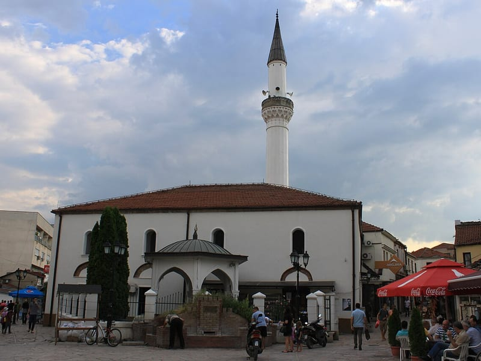
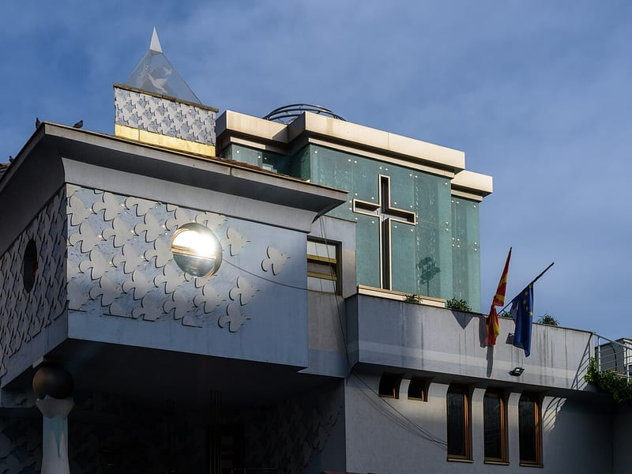
Скопие, без бързане и в малка компания
Отметнете още една балканска столица за един ден, с двама професионални гидове — българин и местен македонец — разказващи и двете страни на историята. Смесицата на Скопие от османски паметници и пищните неокласически сгради от проекта „Скопие 2014“ го прави един от по-изненадващите градове в региона.
Акцентите включват Старата крепост, джамията „Султан Мурат“, историческите каравансараи на Стария базар и новия площад „Македония“ с паметника на Александър Велики. Спираме се и на Дома-музей на Майка Тереза, посветен на най-известната родом от Скопие, преди да завършим при арката „Порта Македония“.
Резервирай място →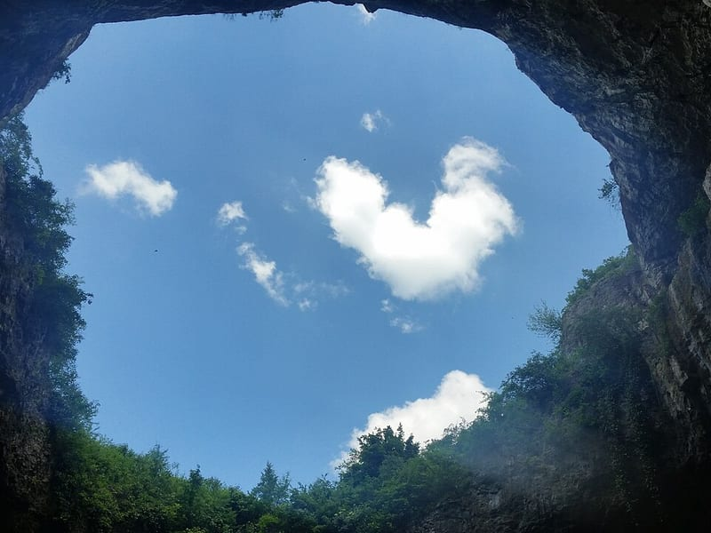
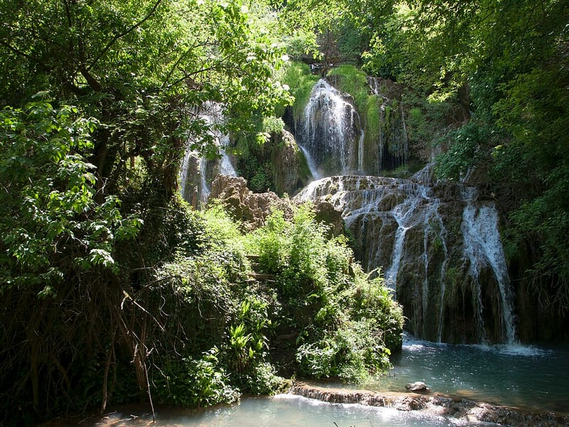
Исторически град, пещера и бирюзови каскади
Един от непрекъснато населяваните градове на България, старата част на Ловеч възнаграждава бавната разходка по калдъръмените улици покрай къщи от 19-ти век, музея на Васил Левски, крепостта Хисаря и Покрития мост — забележителност от 19-ти век, построена от майстор Кольо Фичето.
Оттам е кратко пътуване до Деветашката пещера, огромна карстова зала, използвана някога като военна база, и продължаваме към бирюзовите, терасовидни басейни на Крушунските водопади — разходка през гора и каскадна вода, с която завършва денят.
Резервирай място →Готов за следващото
приключение?
Попълнете формата и нашият екип ще се свърже с вас в рамките на 24 часа с налични дати, подробности и персонализирана оферта.